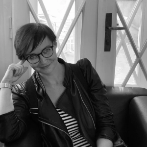

    <main>
      <div class="container">
        <div class="box">
          <div class="box__text">
          <p>
            Před třemi lety jsem se přistěhovala na Novodvorskou a vzápětí ji
            vyhodnotila jako krásné místo k životu. S překvapením jsem však
            shledala, že o tak krásném sídlišti se na internetu lze dočíst jen
            velmi málo. Když jsem navíc zjistila, že jiné krásné pražské
            sídliště - Ďáblice má dokonce vlastní knihu, dospěla jsem k závěru,
            že musím sama přiložit ruku k dílu a alespoň trochu ucelený souhrn
            informací, fotek a odkazů dát dohromady.
          </p>
          <p>
            Pokorně si uvědomuji, že nejsem pamětníkem a že o historii, výstavbě
            a „osidlování“ sídliště prakticky nic nevím. Pokud máte v hlavě
            nějaké zajímavosti nebo v albu staré fotky, budu moc šťastná, pokud
            se se mnou podělíte a pomůžete mi tuto stránku dále rozvíjet. 
          </p>
        </div></div>

        <div class="box">
          <div class="box__text">
          <h2>Autorka projektu</h2>
          <div class="box__flex">
            <div class="box__flex--content">
          <p>
            Veronika Bosáková, nadšený fanoušek moderní architektury,
            funkcionalismu, sorely, brutalismu a hlavně paneláků a sídlišť.
          </p>

          <p>Lovec vetřelců a volavek.</p>

          <p>Začínající web developer.</p>

          <p><a href="/kontaktni-formular/">kontakt</a></p></div>
          <div class="box__flex--image">
            
          </div>
        </div>
        </div></div>

      </div>

    </main>


